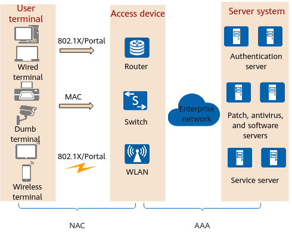

Network Access Control (NAC) implements security control on users and terminals that attempt to access the network in various ways. It allows only authorized users and terminals to access the network and isolates unauthorized and insecure users and terminals. This approach improves the security protection of the entire network.
NAC provides 802.1X authentication, Portal authentication, and MAC address authentication. These authentication methods are implemented differently and are applicable to different scenarios. In practice, you can select the most suitable authentication method or a combination thereof based on your particular scenario. Table 1 compares the authentication methods.
Item |
802.1X Authentication |
MAC Address Authentication |
Portal Authentication |
|---|---|---|---|
Application scenario |
Scenarios with high user concentration and high information security requirements |
Access authentication of dumb terminals such as printers and fax machines |
Scenarios with geographically scattered and moving users |
Whether the client needs to be installed |
Yes |
No |
No |
Advantage |
High security |
No client needs to be installed. |
Flexible deployment |
Disadvantage |
The client needs to be installed, causing inflexible deployment. |
MAC addresses need to be used as user names or passwords, complicating management. |
Low security |
In actual applications, NAC and AAA work together to implement user access authentication.
